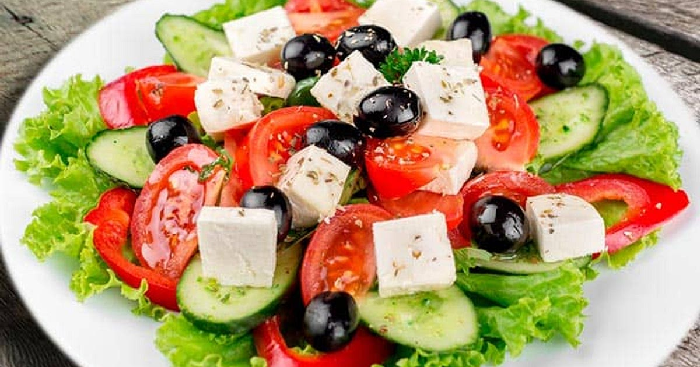
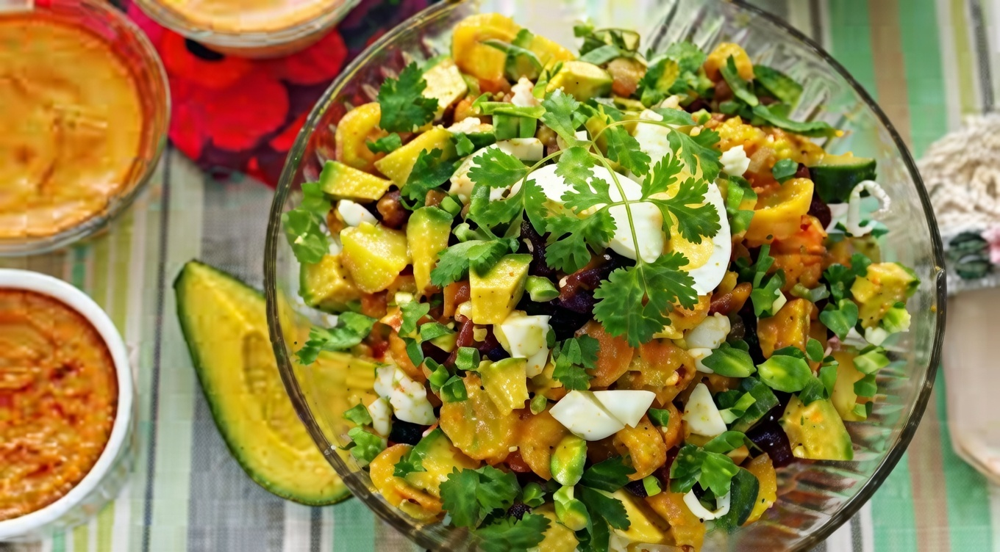
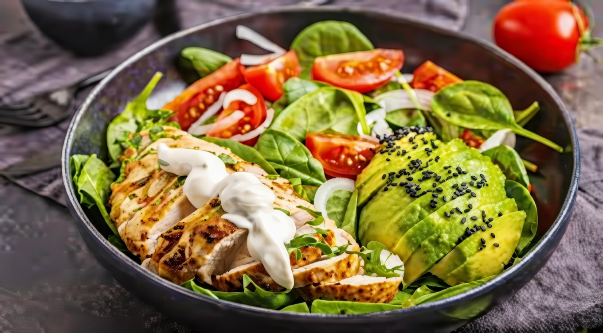
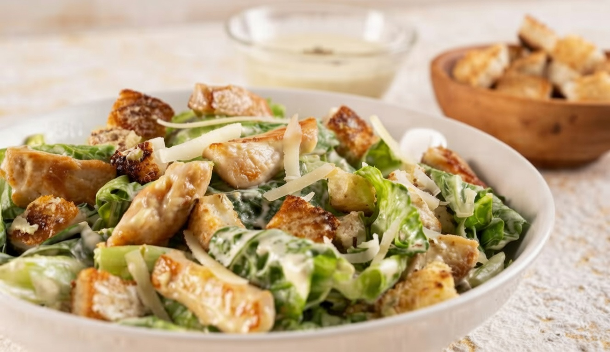

Seleccionar categoría
▼


Lleva tomate, pepino, cebolla roja, aceitunas kalamata y queso feta, aderezada con aceite de oliva y orégano
Primero se lavan y cortan los vegetales en trozos medianos.
Luego se mezclan en un recipiente junto con las aceitunas.
Finalmente se agrega el queso feta y un aderezo de aceite de oliva y orégano.
≈ 220 calorías por porción.

Mezcla de frutas frescas de temporada, a menudo aderezada con jugo de naranja o miel, ideal como postre o refrigerio.
Primero se pelan y cortan las frutas en cubos uniformes.
Luego se colocan en un tazón grande y se mezclan con cuidado para no maltratarlas.
Finalmente se baña con el jugo de naranja para evitar la oxidación y dar frescura.
≈ 120 calorías por porción.

Hecha con huevos duros picados, mayonesa, mostaza y a veces cebolla, servida sobre una cama de lechuga.
Primero se corta la lechuga y se pelan los huevos cocidos, estos se pican en trozos pequeños.
Luego se mezclan en un bol con la mayonesa, la mostaza y el aguacate para dar textura.
Finalmente se decora con el cebollín y un toque de pimienta negra.
≈ 250 calorías por porción.

Incluye pechuga de pollo a la parrilla o asada, verduras frescas y a menudo nueces o frutos secos, aderezada al gusto.
Primero se mezcla el pollo con las verduras y la papa en un recipiente amplio.
Luego se incorpora la crema o mayonesa hasta obtener una mezcla homogénea.
Finalmente se sirve sobre una cama de lechuga fresca.
≈ 320 calorías por porción.

Compuesta por lechuga romana, pan tostado, queso parmesano y aderezo César, que incluye yema de huevo y anchoas.
Primero se lava la lechuga y se trocea con las manos en pedazos grandes.
Luego se mezclan las hojas con el aderezo César y el queso parmesano hasta que queden bien cubiertas.
Finalmente se añade el pan tostado por encima para mantener su textura crujiente.
≈ 390 calorías por porción.

Generalmente incluye verduras frescas, legumbres, semillas y un aderezo a base de aceite y limón, sin productos animales.
Primero se coloca una base de lechuga y pepino en un bol profundo.
Luego se agregan las aceitunas, el aguacate en láminas y el tomate
Finalmente se rocía con el aderezo de aceito y limón para aportar cremosidad y grasas saludables.
≈ 200 calorías por porción.